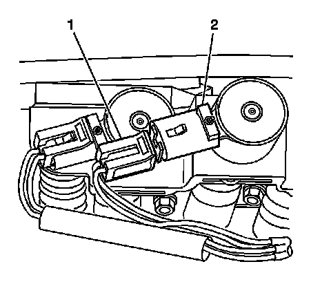
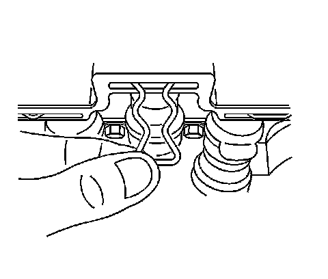
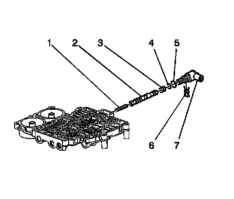

2-3 Shift Solenoid Valve Replacement
2-3 Shift Solenoid Valve Replacement
Removal Procedure
1. Remove the transmission fluid pan. Refer to Automatic Transmission Fluid and Filter Replacement (Removal and Replacement) .

2. Disconnect the electrical wiring harness connector (1) from the 2-3 shift solenoid (2).

3. Using a small screwdriver or pick, remove the 2-3 shift solenoid retainer from the control valve body.

4. Remove the 2-3 shift solenoid (7) from the control valve body.
5. Remove the O-ring seals (4-5) from the 2-3 shift solenoid (7) ONLY if the O-rings are cut or worn.
Installation Procedure
1. Install new O-ring seals (4-5) to the 2-3 shift solenoid (7), if the O-rings were previously removed.
2. Install the 2-3 shift solenoid (7) into the control valve body.
3. Install the 2-3 shift solenoid retainer into the control valve body.
4. Connect the electrical wiring harness connector (1) to the 2-3 shift solenoid (2).
5. Install the transmission fluid pan. Refer to Automatic Transmission Fluid and Filter Replacement (Removal and Replacement) .
Important: It is recommended that transmission adaptive pressure (TAP) information be reset.
Resetting the TAP values using a scan tool will erase all learned values in all cells. As a result, The ECM, PCM or TCM will need to relearn TAP values. Transmission performance may be affected as new TAP values are learned.
6. Reset the TAP values. Refer to Control Module References (Programming and Relearning) .